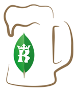

 This is a group for developers and DB administrators to learn more about building scalable MongoDB-based apps and administer a MongoDB installations. If you are interested in NoSQL, Scalability, Big Data or just want to find out more about MongoDB please join us and attend our meetups in Krakow. We're open to anyone interested in these topics.
This March MongoDB is celebrating MongoDB MUG March Madness and Krakow MUG is also taking part in it! We are pleased to announce that Daniel Roberts and Asya Kamsky will be the speakers at our next meetup.
Centrum Informatyki Akademii Górniczo-Hutniczej, Lecture room no. 1.19
Have something to share with the Krakow MUG? Let us know and we will arrange for you to give a presentation at our next meetup!
Krakow MongoDB User Group was founded by Adrian Wolny, Michał Kuleta and Roman Janusz.